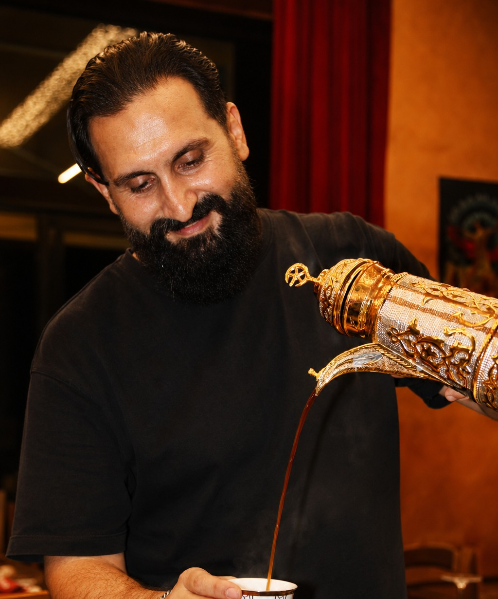
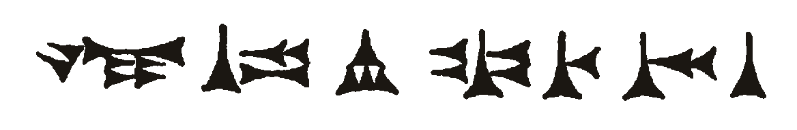

Un nome antico, per un incrocio di culture
An ancient name, for a crossroads of cultures
اسم عريق، لملتقى الحضارات
Babylon prende il nome dall'antica città della Mesopotamia, oggi Iraq, un tempo crocevia di popoli, lingue e merci lungo le rotte che collegavano il Levante alla Persia. La sua celebre Porta di Ishtar, rivestita di maioliche blu e oro, è il simbolo di un incontro tra civiltà che dura da millenni: i colori che vedete in sala, dal blu profondo all'oro, nascono proprio da lì.
Babylon takes its name from the ancient city of Mesopotamia, modern-day Iraq, once a crossroads of peoples, languages and goods along the routes linking the Levant to Persia. Its famous Ishtar Gate, glazed in blue and gold, stands as a symbol of an encounter between civilizations that has lasted for millennia: the colors you see in our dining room, from deep blue to gold, come directly from it.
يستمد بابل اسمه من مدينة بلاد ما بين النهرين القديمة، العراق اليوم، التي كانت يومًا ملتقى الشعوب واللغات والبضائع على طول الطرق الرابطة بين بلاد الشام وفارس. بوابة عشتار الشهيرة، المزينة بالقاشاني الأزرق والذهبي، رمزٌ للقاء الحضارات الذي استمر آلاف السنين: الألوان التي ترونها في صالتنا، من الأزرق العميق إلى الذهبي، مستوحاة منها مباشرة.
Quella stessa idea di incontro guida ogni scelta in cucina. Non abbiamo voluto un ristorante dedicato a un solo paese, ma una tavola che raccontasse davvero come si mangia lungo l'intera regione: il Libano delle creme e delle insalate fresche, la Siria delle spezie e delle melasse agrodolci, l'Iraq delle grigliate importanti, la Persia dei piatti a base di melanzana ed erbe. Sono cucine vicine, spesso confuse tra loro, che qui trovano ciascuna il proprio spazio sul piatto.
That same idea of encounter guides every choice in the kitchen. We didn't want a restaurant devoted to a single country, but a table that genuinely reflects how people eat across the whole region: Lebanon's fresh dips and salads, Syria's spices and sweet-sour molasses, Iraq's serious grilling, Persia's eggplant and herb-driven dishes. These are neighboring cuisines, often blurred together from the outside, that here each get their own space on the plate.
فكرة اللقاء نفسها توجّه كل خيار في مطبخنا. لم نُرد مطعمًا مخصصًا لبلد واحد، بل مائدة تعكس بصدق كيف يأكل الناس في المنطقة كلها: لبنان بمقبلاته وسلطاته الطازجة، سوريا بتوابلها ودبسها الحلو الحامض، العراق بشوايه الجادة، وفارس بأطباقها القائمة على الباذنجان والأعشاب. هذه مطابخ متجاورة، غالبًا ما تختلط في الأذهان، وهنا يجد كل منها مساحته الخاصة في الطبق.
Qui a Milano, quella stessa idea prende forma in cucina: ricette libanesi, siriane, irachene e iraniane, preparate con ingredienti freschi e carni 100% halal, servite in un solo luogo, senza compromessi sull'autenticità di nessuna delle quattro.
Here in Milan, that same idea takes shape in the kitchen: Lebanese, Syrian, Iraqi and Iranian recipes, made with fresh ingredients and 100% halal meat, served in one place, without compromising the authenticity of any of the four.
هنا في ميلانو، تتجسد الفكرة نفسها في المطبخ: وصفات لبنانية وسورية وعراقية وإيرانية، مُحضّرة بمكونات طازجة ولحوم حلال ١٠٠٪، تُقدَّم في مكان واحد، دون المساس بأصالة أي منها.

La fila di segni cuneiformi che apre il nostro sito e il nostro logo è un omaggio stilizzato alla scrittura a cuneo nata proprio in Mesopotamia, tra le prime forme di scrittura della storia umana: un modo per ricordare, prima ancora di ordinare, da dove viene questo viaggio.
The row of wedge-shaped marks opening our site and logo is a stylized homage to cuneiform script, born in Mesopotamia and among the earliest forms of writing in human history: a way of remembering, before you even order, where this journey begins.
صف الرموز المسمارية الذي يفتتح موقعنا وشعارنا هو تحية أسلوبية للكتابة المسمارية التي وُلدت في بلاد ما بين النهرين، من أقدم أشكال الكتابة في تاريخ البشرية: طريقة لنتذكر، قبل أن نطلب الطعام، من أين تبدأ هذه الرحلة.